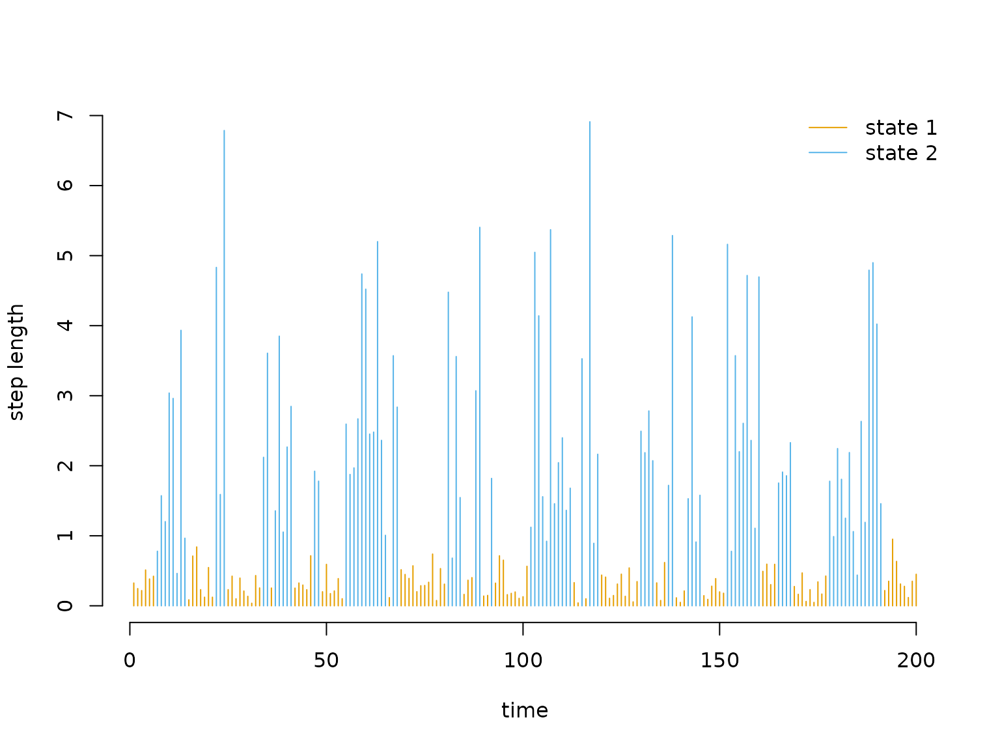
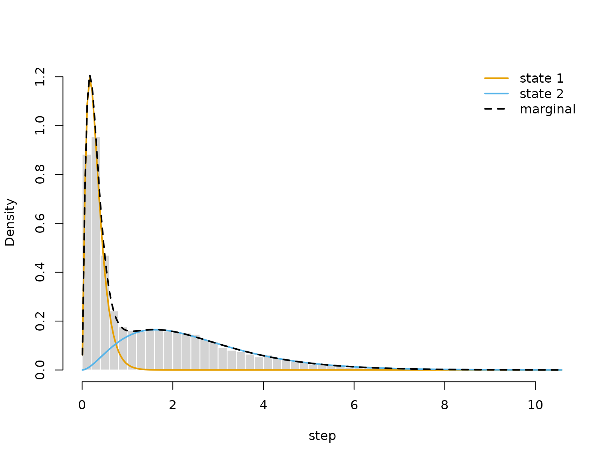
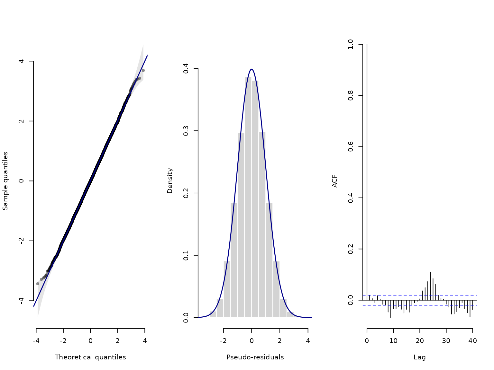

1 Introduction to LaMa
Jan-Ole Fischer
Intro_to_LaMa.RmdThe R package LaMa provides convenient
functions for fitting a variety of latent Markov
models, including hidden Markov models (HMMs),
hidden semi-Markov models (HSMMs), state space
models (SSMs) and continuous-time variants via
direct numerical maximum likelihood estimation. The
core idea underlying this package is given in Mews et al. (2025), namely for all these models
the likelihood function has the same structure, and hence unification of
inference procedures is attractive.
Model specification in LaMa amounts to defining a
custom likelihood function using provided building
blocks – similar to stacking Legos. This approach is different (and
arguably more difficult) than model specification in packages like
moveHMM, momentuHMM, or hmmTMB.
The modular approach, however, has the advantage of being more flexible.
Specifying simple models is still very easy and convenient while model
complexity can be increased to an arbitrary level and arbitrarily fine
control is available for advanced users.
In this vignette, we show the simple way: with automatic differentiation (AD), a basic HMM takes only a few lines of code, and the fitted model object gives state decoding, residuals, plots and simulation for free. The vignette Finer control then shows what the convenience functions do, and how to write every part yourself.
Hidden Markov models
We start from the most basic hidden Markov model (HMM). An N-state HMM is a doubly stochastic process in discrete time: observations are generated by one of N possible distributions f_j(x_t), j = 1, \dots, N, and an unobserved N-state Markov chain selects which distribution is active at any given time point. Hence, HMMs are temporally-dependent mixture models, popular in ecology, sports, finance and many other fields (see Zucchini et al. (2016) for a detailed introduction). The two main model assumptions are:
- f(s_t \mid s_{t-1}, s_{t-2}, \dots, s_1) = f(s_t \mid s_{t-1}) (Markov assumption)
- f(x_t \mid x_1, \dots, x_{t-1}, x_{t+1}, \dots, x_T, s_1, \dots, s_T) = f(x_t \mid s_t) (conditional independence assumption).
The hidden state process is described by an N-state Markov chain which is fully characterised by its initial distribution \boldsymbol{\delta}^{(1)} = (\Pr(S_1 = 1), \dots, \Pr(S_1 = N)) and the one-step transition probabilities \gamma_{ij} = \Pr(S_t = j \mid S_{t-1} = i), \quad i,j = 1, \dotsc, N. These are typically summarised in a transition probability matrix (t.p.m.) \boldsymbol{\Gamma} = (\gamma_{ij})_{i,j = 1, \dots, N}, where row i is the conditional one-step-ahead distribution of the state process given that the current state is i. For example a t.p.m. for a two-state Markov chain could be
library(LaMa)
#> Loading required package: RTMB
(Gamma = matrix(c(0.9, 0.1,
0.2, 0.8), nrow = 2, byrow = TRUE))
#> [,1] [,2]
#> [1,] 0.9 0.1
#> [2,] 0.2 0.8We often assume that the Markov chain is stationary,
i.e. that it has been running for a long time before our observations
started – e.g. when observing an animal’s behavioural states. The
initial distribution is then the stationary distribution \boldsymbol{\delta}, which solves
\boldsymbol{\delta} \boldsymbol{\Gamma} = \boldsymbol{\delta}, \quad
\text{s.t.} \; \sum_{j=1}^N \delta_j = 1,
and is computed by stationary():
(delta = stationary(Gamma))
#> S1 S2
#> 0.6666667 0.3333333It can be interpreted as the long-run proportion of time spent in each state. For the state-dependent distributions f_j(x_t), a typical choice is a parametric family like normal or gamma distributions with state-specific means and standard deviations.
As we do not observe the states, the likelihood sums over all
possible state sequences. This is done efficiently by the
forward algorithm, implemented in
forward() (see Finer
control for details) – for fitting models, we only need to
provide the ingredients.
Automatic differentiation via RTMB
LaMa fits models using automatic differentiation (AD)
via the RTMB package (loaded together with
LaMa), the R interface to Template Model
Builder (TMB, Kristensen et al. 2016). You
write the likelihood as plain R code, and RTMB
provides fast and exact derivatives (without doing any
calculations by hand!). This makes model fitting fast and robust, and
even complex models with random effects feasible.
As an example, we analyse the trex data set contained in
the package. It contains hourly step lengths of a Tyrannosaurus rex,
living 66 million years ago, and we aim to understand its behavioural
process using HMMs.
head(trex, 5)
#> tod step angle state
#> 1 9 0.3252437 NA 1
#> 2 10 0.2458265 2.234562 1
#> 3 11 0.2173252 -2.262418 1
#> 4 12 0.5114665 -2.958732 1
#> 5 13 0.3828494 1.811840 1The workflow is always the same. We
- define the negative log-likelihood function,
- turn it into an AD objective function, and
- fit the model by numerical optimisation of the latter.
We fit a stationary 2-state HMM with state-dependent gamma
distributions for the step lengths. First, we define a list
par of initial parameter values on an unconstrained
(real-valued) scale, and a list dat with the data and other
fixed quantities. The number of states follows from the parameters, here
two means and standard deviations.
par = list(
log_mu = log(c(0.3, 1)), # initial means for step length (log-transformed)
log_sigma = log(c(0.2, 0.7)), # initial sds for step length (log-transformed)
eta = rep(-2, 2) # initial t.p.m. parameters (on logit scale)
)
dat = list(
step = trex$step # hourly step lengths
)Because par is a named list, we can access parameters by
name. The likelihood consists of three building blocks:
tpm() computes the transition probability matrix from
unconstrained parameters, statedens() computes the density
of each observation in each state (the allprobs matrix,
with missing observations handled automatically), and
forward() computes the log-likelihood from these two, here
with the stationary distribution of Gamma as initial
distribution.
nll = function(par) {
getAll(par, dat) # makes everything contained available without $
Gamma = tpm(eta) # computes transition probability matrix from unconstrained eta
# Parameter transformations for strictly positive parameters
mu = exp(log_mu); REPORT(mu)
sigma = exp(log_sigma); REPORT(sigma)
# State-dependent densities of all observations
allprobs = statedens(step, dgamma2, mu, sigma)
-forward("stationary", Gamma, allprobs) # forward algorithm, stationary initial distribution
}Three things differ from an ordinary R function:
-
Only parameters are passed.
nlltakesparas its only argument, andgetAll(par, dat)makes all parameters and data available by name.datis read whenMakeADFun()is called, so changes todatafter that have no effect. -
Parameters are unconstrained. Everything in
parlives on the real line and is transformed inside the likelihood, e.g. withexp()for positive parameters.tpm()does this for the transition probabilities. -
REPORT()keeps results. Reported quantities are available after fitting, so we never have to back-transform parameters by hand.
Next, MakeADFun() turns nll into an AD
objective function obj, which contains the objective
function fn and its gradient gr, among others.
Calling them without arguments evaluates them at the initial
parameters:
obj = MakeADFun(nll, par, silent = TRUE) # silent = TRUE suppresses printing
obj$fn()
#> [1] 16378.66
obj$gr()
#> [,1] [,2] [,3] [,4] [,5] [,6]
#> [1,] 609.4426 -2272.55 94.1283 -12144.32 151.3179 -181.5449We fit the model with nlminb(), providing the gradient.
We do not supply the Hessian, as a quasi-Newton method that uses
gradients only is typically much faster.
opt = nlminb(obj$par, obj$fn, obj$gr) # minimisationlama() then runs the reporting at the estimated
parameters and returns a model object. Printing it gives a short
overview, while summary() shows the estimated state process
(transition probability matrix, stationary distribution and mean dwell
times) and all reported quantities:
mod = lama(obj)
mod
#> Latent Markov model with 2 states (discrete time, homogeneous)
#> 9999 observations (1 missing), 6 parameters
#> Log-likelihood: -10847.12 AIC: 21706.25 BIC: 21749.51
#> Reported: mu, sigma, delta, Gamma, allprobs
summary(mod)
#> Latent Markov model with 2 states (discrete time, homogeneous)
#> 9999 observations (1 missing), 6 parameters
#>
#> Transition probability matrix:
#> S1 S2
#> S1 0.8270 0.1730
#> S2 0.1608 0.8392
#>
#> Stationary distribution:
#> S1 S2
#> 0.4817 0.5183
#>
#> Mean dwell times:
#> S1 S2
#> 5.779 6.217
#>
#> Reported quantities:
#> S1 S2
#> mu 0.3035 2.506
#> sigma 0.2015 1.491
#>
#> Log-likelihood: -10847.12 AIC: 21706.25 BIC: 21749.51
#> Maximum gradient component: 0.0141All reported quantities are elements of mod. Besides our
own REPORT()s, forward() always reports
delta, Gamma and allprobs.
AIC() and BIC() work as for other models:
mod$Gamma # estimated t.p.m.
#> S1 S2
#> S1 0.8269542 0.1730458
#> S2 0.1608473 0.8391527
mod$mu # estimated state-dependent means
#> [1] 0.3034935 2.5057090
AIC(mod)
#> [1] 21706.25Working with the fitted model
The model object contains everything needed for downstream tasks. We
can decode the most probable state sequence with viterbi()
and plot the decoded time series
mod$states = viterbi(mod)
# defining color vector
color = LaMaColors(2)
plot(trex$step[1:200], type = "h", xlab = "time", ylab = "step length",
col = color[mod$states[1:200]], bty = "n")
legend("topright", col = color, lwd = 1, legend = c("state 1", "state 2"), bty = "n")
or get the local state probabilities with
stateprobs(mod).
As statedens() records the data, densities and
parameters, the estimated state-dependent distributions can be plotted
directly from the model object, weighted by the local state
probabilities:
plot(mod, type = "statedens")
We can do some model checking using
pseudo-residuals, which should be standard normally
distributed if the model is correct. pseudo_res(mod)
computes them from the model object alone, and plot(mod)
plots them directly (with one row per data stream):
plot(mod)
Finally, simulate() simulates states and observations
from the fitted model, e.g. to check whether it reproduces features of
the data, or for simulation studies:
sim = simulate(mod)
head(sim)
#> state step
#> 1 2 2.827231
#> 2 2 1.838420
#> 3 2 1.242336
#> 4 2 3.102050
#> 5 2 2.325925
#> 6 2 3.812471Continue reading with Finer control to see what the convenience functions do and how to write every part yourself, or go straight to Extensions.